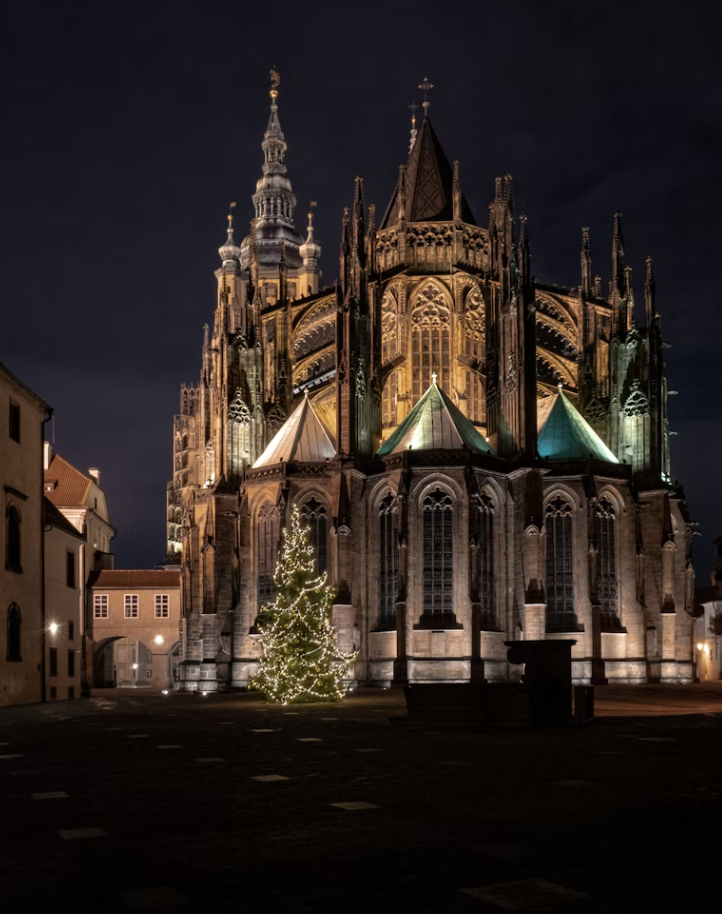

Die Prager Burg & St.-Veits-Dom
Tausend Jahre Macht, Glaube und Architektur auf dem größten zusammenhängenden Burgareal der Welt — vom romanischen Fundament bis zur gotischen Pracht des Doms.
Details ansehen arrow_forward
Altstadt & Jüdisches Viertel
Das mittelalterliche Herz Prags und das bewegende Erbe des Josefov, geführt mit offizieller Akkreditierung des Jüdischen Museums in Prag.
Details ansehen arrow_forward
Das alchemistische Prag
Die mystische und geheimnisvolle Seite der Prager Geschichte — von der Astrologie am Hofe Rudolfs II. bis zu den Legenden des Goldenen Gässchens.
Details ansehen arrow_forward
Verstecktes Prag
Höfe, Gassen und Geschichten abseits der Touristenpfade — das Prag, das die Einheimischen lieben und das in keinem Reiseführer steht.
Details ansehen arrow_forward
Prag & deutsches Erbe
Auf den Spuren der deutschsprachigen Geschichte Prags, von Kafka bis zur Prager deutschen Literatur — ein Kapitel, das die Stadt bis heute prägt.
Details ansehen arrow_forward
Individuelle Privattour
Sagen Sie mir, was Sie interessiert, und ich baue den Rundgang darum. Wenn Sie es noch nicht wissen, umso besser — wir entdecken es gemeinsam.
Anfrage senden arrow_forward